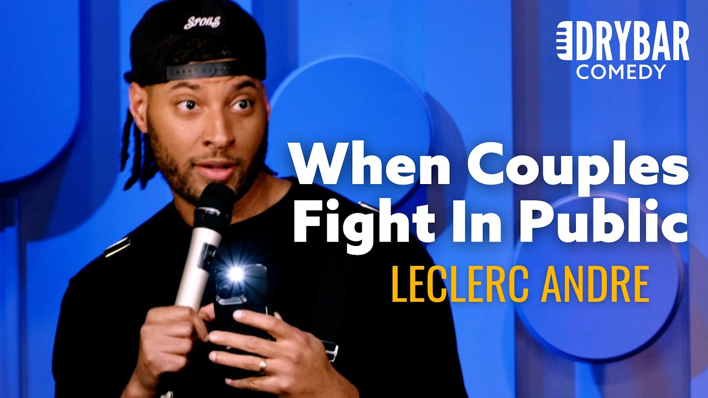

来B站一起耍【Global每日英语简报】
【我爱看情侣在公共场合吵架。LeClerc Andre】
Summary: The narrator enjoys watching public fights, especially between couples, and shares humorous anecdotes about witnessing conflicts in New York and on Spirit Airlines flights.
摘要： 讲述者喜欢看公共场合的吵架，尤其是情侣之间的争吵，并分享了在纽约和精神航空航班上目睹冲突的幽默轶事。

⏱️ Estimated Reading Time: 6 min
Every time you step outside of New York, you can see a fight.
每次你走出纽约，都能看到一场吵架。
That's like the only upside for me because I love seeing couples fight in public.
这对我来说几乎是唯一的乐趣，因为我喜欢看情侣在公共场合吵架。
It's my favorite thing.
这是我最喜欢的事。
I love seeing a relationship ruined in public.
我喜欢看一段关系在公共场合破裂。
The other day I was walking down the street and all I heard was a girl say, you know, I just think it's funny.
前几天我在街上走，听到一个女孩说：“我只是觉得这很好笑。”
I was like, wait a minute.
我当时想，等等。
What's going on over here, girl?
这里发生了什么，姑娘？
What you doing?
你在干嘛？
I tied my shoes for 30 minutes.
我系鞋带系了30分钟。
I was invested.
我完全投入了。
I'm messy.
我就是爱凑热闹。
I pick size, too.
我也爱挑事。
I'm like, "Yeah, I think it's funny, too."
我说：“是啊，我也觉得好笑。”
Go ahead.
继续啊。
What's happening?
怎么了？
What's going on?
发生什么了？
Anytime a woman says, "I just think it's funny."
每当一个女人说“我只是觉得好笑”时。
It's never followed by a good joke.
后面绝不会跟着一个好笑话。
She about to say the meanest thing you've ever heard, my boy.
她接下来要说的会是你听过的最刻薄的话，兄弟。
Buckle up.
系好安全带。
I just think it's funny.
我只是觉得好笑。
It's a threat.
这是一种威胁。
You are in trouble.
你有麻烦了。
Men are different.
男人不一样。
The way men fight, you know?
男人吵架的方式，你懂的？
I saw these two cab drivers face to face.
我看到两个出租车司机面对面。
They were about to hit each other.
他们差点打起来。
They were cursing each other out.
他们互相咒骂。
And when I looked closer, everybody had their phones out.
我仔细一看，所有人都在拍视频。
Everybody was recording.
所有人都在录像。
Nobody wanted to say anything.
没人想说什么。
So, I stepped up.
所以，我站了出来。
I'm old school, you know.
我是老派的人，你懂的。
I got right in between them.
我直接走到他们中间。
I was like, "Hey, hey, man. Listen. I wouldn't let him talk to me like that."
我说：“嘿，嘿，老兄，听着，我可不会让他这么跟我说话。”
Yeah.
是啊。
My mama didn't raise a punk.
我妈可没把我养成怂包。
Go ahead, man.
继续啊，老兄。
What's going on?
怎么了？
My battery's dying.
我手机快没电了。
Hurry up.
快点。
They both got arrested.
他们俩都被抓了。
It was crazy.
太疯狂了。
You know, try to break it up.
你知道，我试着劝架。
You know, I think the best place to watch a fight is on an airplane, personally.
我个人觉得，看吵架最好的地方是在飞机上。
Oh, I love a fight in the sky.
哦，我爱看空中的吵架。
Stop playing.
别闹了。
That's why I fly Spirit.
所以我坐精神航空。
Oh, yeah.
哦，是啊。
Where my Spirit folks at?
精神航空的伙伴们在哪？
I see y'all.
我看到你们了。
Yeah, people talk trash about Spirit like it's not the best airline.
是啊，人们总说精神航空不好，好像它不是最好的航空公司。
Like, "Oh, they don't have TVs."
比如，“哦，他们没有电视。”
We don't need TVs.
我们不需要电视。
Okay, that's right.
好吧，没错。
We got alcohol and poor people.
我们有酒和穷人。
What more do you need?
你还需要什么？
Are you not entertained?
你不觉得有趣吗？
It's like Jerry Springer with wings.
就像带翅膀的《杰瑞·斯普林格秀》。
It's the best way to fly.
这是最好的飞行方式。
Spirit, come on now.
精神航空，来吧。
I get hype just boarding.
我一登机就兴奋。
When they call my group, I'm like, "Yeah, Jerry. Jerry."
当他们叫我的登机组时，我就喊：“耶，杰瑞！杰瑞！”
Start kicking strollers.
开始踢婴儿车。
Get this baby out of here.
把这孩子弄出去。
He ain't ready.
他还没准备好。
He ain't ready to fly with the big boys.
他还没准备好和大佬们一起飞。
You know, I saw the impossible on a spirit flight.
我在精神航空的航班上看到了不可能的事。
I saw a lady get kicked off the plane.
我看到一位女士被赶下飞机。
How ratchet do you have to be to get kicked off a spirit flight?
你得有多离谱才会被精神航空赶下飞机？
And she protested, too.
她还抗议了。
She was like, "No, this is against my rights.
她说：“不，这侵犯了我的权利。”
Where in the Constitution?
宪法哪条写了？
It's always the same toothless women quoting the Constitution on airplanes.
总是那些没牙的女人在飞机上引用宪法。
Stop acting like you already read the original.
别装得好像你读过原文一样。
Okay, you know you can't read cursive.
好吧，你知道你看不懂手写体。
Get the heck off this plane.
赶紧下飞机吧。
Stop delaying this flight.
别耽误航班了。
Okay, she got kicked off and the flight attendant, this is the craziest part, she was so sick of it.
好吧，她被赶下飞机了，而空乘——最疯狂的部分来了——她受够了。
The flight attendant was like, "To the loop, Brenda," is what she said.
空乘说：“再见啦，布伦达。”
So passive aggressively.
非常阴阳怪气。
Toodaloo.
再见啦。
First of all, touteloo is is a is a magical white word.
首先，“toodaloo”是一个神奇的白人词汇。
It is right.
没错。
Top tier.
顶级词汇。
Toodaloo.
再见啦。
Come on now.
拜托。
I can't say tuttaloo all willy-nilly.
我可不能随便说“toodaloo”。
Okay.
好吧。
Okay.
好吧。
I could barely say willy-nilly to the It's outrageous.
我连“willy-nilly”都说不利索。太离谱了。
I can't walk around Harlem like, "All right, to the Loop, brother.
我可不能在哈莱姆区到处说：“好吧，再见啦，兄弟。”
I see you uh I see you Thursday.
周四见。
All right, Tata now."
好吧，拜拜啦。”
Okay.
好吧。
Yeah.
是啊。
Yeah.
是啊。
I'm f to scadaddle.
我要溜了。
Like, I didn't know they could scadaddle.
我都不知道他们能“scadaddle”。
I wish we could scram and scuaddle.
真希望我们也能“scram”和“scuaddle”。
Looks so fun.
看起来很好玩。
You know, y'all got good words, man.
你们有好词儿啊，兄弟。
You keep hiding them from us.
你们一直藏着不告诉我们。
I want some of these.
我想要一些。
My favorite word you guys have is you guys have shenanigans.
我最喜欢的词是“shenanigans”。
Shenanigans.
恶作剧。
Come on now.
拜托。
We got misdemeanors.
我们有“misdemeanors”。
It's not It's not the same.
这不一样。
It's not the same.
这不一样。